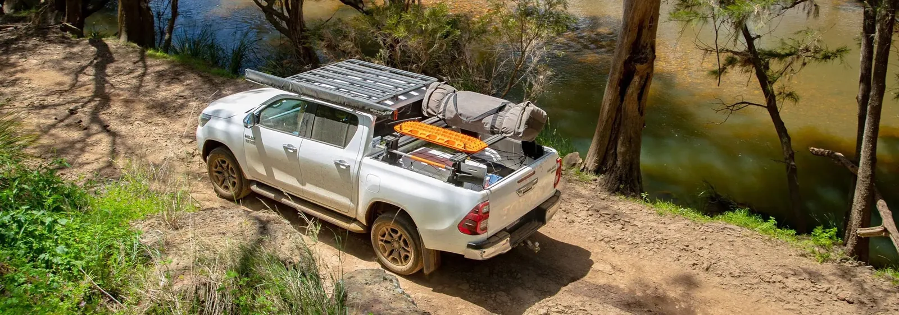
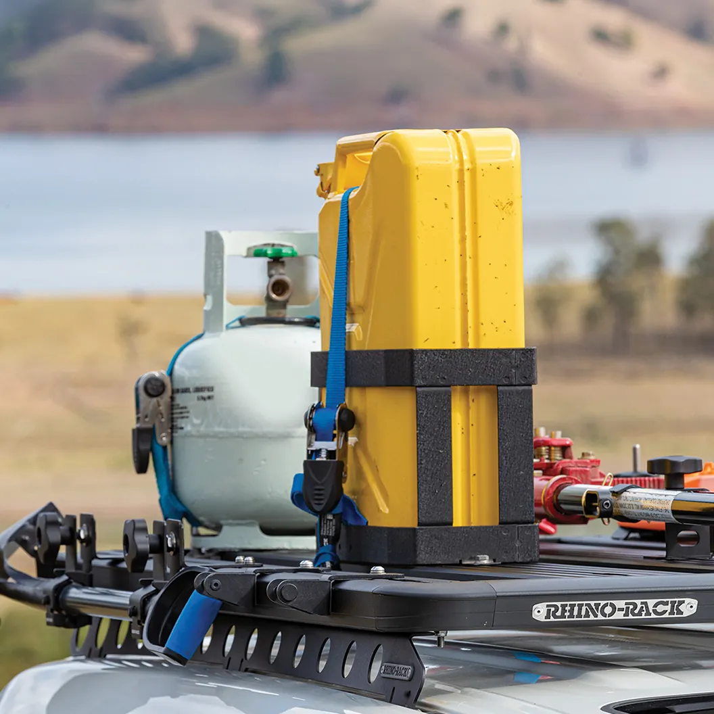
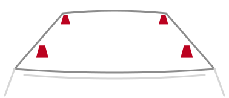
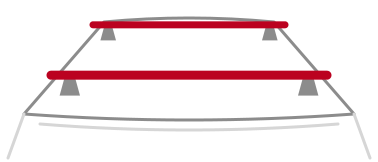
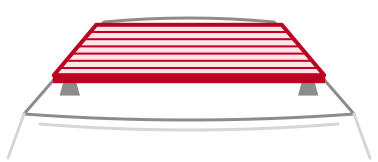
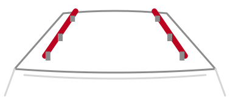
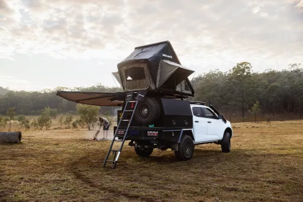
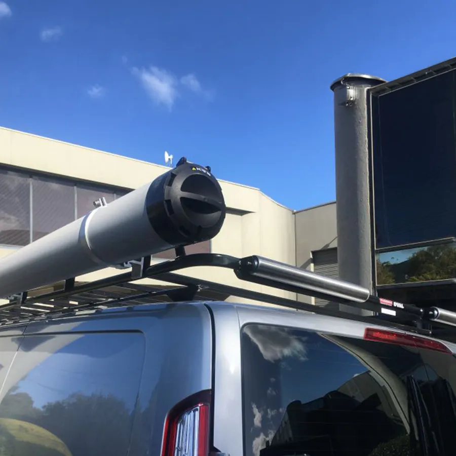
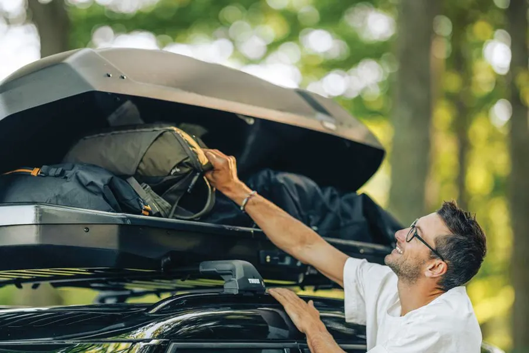
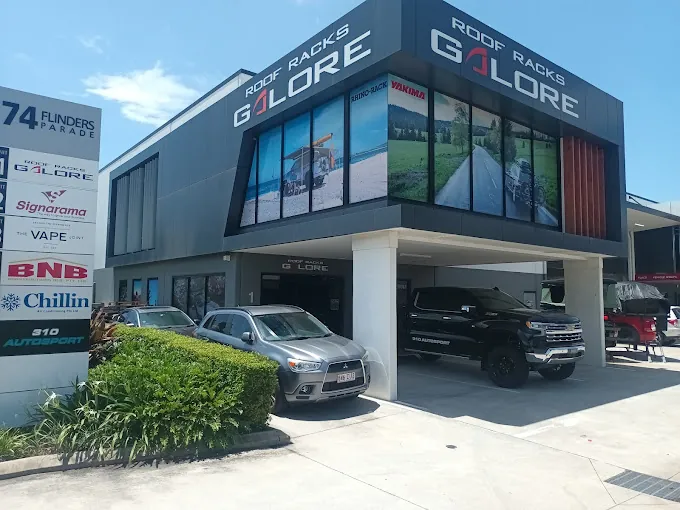

Find the Right Roof Rack for Your Vehicle
Finding the right roof rack isn't as simple as picking one that looks right. It all comes down to your vehicle's roof, how much weight it's designed to carry, and what you actually want to put on it.
Choose your make, model and year below to see what fits, or keep reading for a quick rundown.

Over 200,000 Racks Fitted
If it's got a roof, we've probably worked on it
35+ Fitment Centres
Expert Fitting In-Store
Most fittings are done while you wait
Rack Fit Guarantee
Free nationwide rack guarantee
Why Trust Our Fit Advice
We've fitted roof racks to just about everything over the years. Small hatchbacks, family SUVs, dual cab utes, fully kitted-out LandCruisers heading off on serious trips... if it's got a roof, there's a good chance we've worked on it. It's the benefit of having 35+ stores fitting racks every day. So when we tell you something fits, or doesn't, it's because we've seen it ourselves.
If a roof rack kit is listed as fitting your vehicle, it fits — everything you need is included, with nothing extra to track down separately. And if you'd rather talk it through in person, drop into one of our stores. Our team can help you choose the right setup and arrange fitting on the spot.

What Roof Type Does Your Vehicle Have?
Every roof rack system is built around a particular roof type. Get that part wrong and nothing else really matters. A properly matched system will be secure and load-rated, while the wrong one simply won't fit as intended. Most vehicles fit into one of these common roof styles:
Raised Rails
Roof rails that sit above the roof with a gap underneath. You'll see these on plenty of SUVs and wagons, and they're generally one of the easiest setups to fit.
Flush Rails
These rails sit flush against the roof with no gap underneath. They're common on newer SUVs and passenger cars and need a vehicle-specific fitting kit rather than a universal clamp.
Fixed Points
Factory mounting points built into the roof, usually hidden under small plastic covers. You'll find them on plenty of newer 4WDs and utes. We always check the correct kit before recommending one.
Roof Tracks
A full-length track system that lets you move the mounting legs to suit different loads or accessories.
Gutters
Usually found on older 4WDs, vans and some utes. The rack mounts directly to the external gutter that runs along the edge of the roof.
Bare Roof
No rails, gutters or obvious mounting points? That's more common than people think. It doesn't mean you can't fit a roof rack, it just means you'll need the right vehicle-specific mounting kit. If you're unsure, we'll help you work it out.
How Much Weight Can Your Roof Rack Carry?
This is probably one of the questions we get asked most, and it's also one of the easiest things to get wrong. There are actually two weight ratings you need to pay attention to:
Static Load Rating
This is how much weight your roof can support while the vehicle is parked. Think rooftop tents, people sleeping overnight, or loading gear before a trip. It's almost always the higher of the two ratings.
Dynamic Load Rating
This is the maximum weight your vehicle can safely carry while it's moving. Once you're driving, forces from braking, cornering and bumps all come into play, so this rating is usually much lower than the static one.
Roof Bars, Legs, Platforms & Backbones — What's the Difference?
A complete roof rack setup is made up of a few different parts, and each one does a different job.

Legs (or Towers)
What attach the system to your vehicle. These need to match your roof type exactly, so they're the most vehicle-specific part of the whole setup.
Shop fitting kits ›
Bars
Bars sit across the legs and are what most accessories attach to, whether that's a bike carrier, roof box or kayak holder.
Shop roof bars ›
Platforms & Trays
One large flat surface across the roof. Popular for touring builds and tradies carrying long loads, since you can mount several accessories at once.
Shop platforms & trays ›
Backbones & Spines
Rails that run the length of the roof and bolt to your vehicle's factory points, often with no drilling. A platform sits on top, and the backbone spreads its load along the roof.
Shop backbones & spines ›Not everyone needs a full platform either. If you're only carrying bikes every now and then, or a roof box for holidays, a set of cross bars is often all you need. Platforms really come into their own when you've got several accessories to mount or want one solid, versatile load area.
Choosing the Right Setup for How You Actually Use Your Vehicle

Weekend Adventurer
If weekends usually involve camping or heading off-road, start with a rooftop tent and awning. A platform underneath lets you mount them and the rest of your gear all at once, without swapping accessories every trip.
Shop awnings & roof top tents ›
Tradie / Fleet
For work vehicles, a platform or tray makes carrying ladders, pipe and long materials much easier. Combined with the right tie-down points, it's a practical setup built for daily use.
Shop trade & work ›
Family / Daily Driver
If you mainly need extra space for holidays or weekends away, a simple set of roof bars is usually the best option. They're ideal for roof boxes, bikes and kayaks without permanently changing how the car looks or drives.
Shop roof boxes ›We Can Fit It for You
Don't want to fit it yourself? Our trained installers mount your roof rack properly, torque it to spec and make sure it's safe to load — most fittings are done while you wait.
Find Your Fit
Use the Fit Finder above to match the exact roof rack system to your vehicle. No guesswork.

Book In-Store
Pick a time that suits, or just drop by. Most fittings are done while you wait.
Fitted & Checked
We fit it, load-check it and show you how it all works before you drive off.